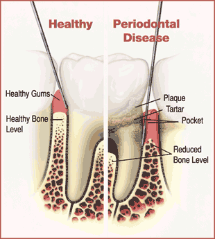

Periodontal (gum) diseases, including gingivitis and periodontitis, are serious infections that, left untreated, can lead to tooth loss. The word periodontal literally means "around the tooth." Periodontal disease is a chronic bacterial infection that affects the gums and bone supporting the teeth.
Periodontal disease can affect one tooth or many teeth. It begins when the bacteria in plaque (the sticky, colorless film that constantly forms on your teeth) causes the gums to become inflamed.

In the mildest form of the disease, gingivitis, the gums redden, swell and bleed easily. There is usually little or no discomfort. Gingivitis is often caused by inadequate oral hygiene. Gingivitis is reversible with professional treatment and good oral home care.
Untreated gingivitis can advance to periodontitis. With time, plaque can spread and grow below the gum line. Toxins produced by the bacteria in plaque irritate the gums. The toxins stimulate a chronic inflammatory response in which the body in essence turns on itself, and the tissues and bone that support the teeth are broken down and destroyed. Gums separate from the teeth, forming pockets (spaces between the teeth and gums) that become infected. As the disease progresses, the pockets deepen and more gum tissue and bone are destroyed. Often, this destructive process has very mild symptoms. Eventually, teeth can become loose and may have to be removed.
The main cause of periodontal disease is bacterial plaque, a sticky, colorless film that constantly forms on your teeth. However, factors like the following also affect the health of your gums.
Smoking/Tobacco Use Genetics Pregnancy and Puberty Stress Medications Clenching or Grinding Your Teeth Diabetes Poor Nutrition Other Systemic Diseases Gingivitis Aggressive Periodontitis Chronic Periodontitis Periodontitis as a Manifestation of Systemic Diseases Necrotizing Periodontal Diseases If you've already lost a tooth to periodontal disease, you may be interested in dental implants – the permanent tooth replacement option.
Causes of Periodontal Disease
As you probably already know, tobacco use is linked with many serious illnesses such as cancer, lung disease and heart disease, as well as numerous other health problems. What you may not know is that tobacco users also are at increased risk for periodontal disease. In fact, recent studies have shown that tobacco use may be one of the most significant risk factors in the development and progression of periodontal disease.
Research proves that up to 30% of the population may be genetically susceptible to gum disease. Despite aggressive oral care habits, these people may be six times more likely to develop periodontal disease. Identifying these people with a genetic test before they even show signs of the disease and getting them into early interventive treatment may help them keep their teeth for a lifetime.
As a woman, you know that your health needs are unique. You know that brushing and flossing daily, a healthy diet, and regular exercise are all important to help you stay in shape. You also know that at specific times in your life, you need to take extra care of yourself. Times when you mature and change, for example, puberty or menopause, and times when you have special health needs, such as menstruation or pregnancy. During these particular times, your body experiences hormonal changes. These changes can affect many of the tissues in your body, including your gums. Your gums can become sensitive, and at times react strongly to the hormonal fluctuations. This may make you more susceptible to gum disease. Additionally, recent studies suggest that pregnant women with gum disease are seven times more likely to deliver preterm, low birth weight babies.
As you probably already know, stress is linked to many serious conditions such as hypertension, cancer, and numerous other health problems. What you may not know is that stress also is a risk factor for periodontal disease. Research demonstrates that stress can make it more difficult for the body to fight off infection, including periodontal diseases.
Some drugs, such as oral contraceptives, anti-depressants, and certain heart medicines, can affect your oral health. Just as you notify your pharmacist and other health care providers of all medicines you are taking and any changes in your overall health, you should also inform your dental care provider.
Has anyone ever told you that you grind your teeth at night? Is your jaw sore from clenching your teeth when you're taking a test or solving a problem at work? Clenching or grinding your teeth can put excess force on the supporting tissues of the teeth and could speed up the rate at which these periodontal tissues are destroyed.
Diabetes is a disease that causes altered levels of sugar in the blood. Diabetes develops from either a deficiency in insulin production (a hormone that is the key component in the body's ability to use blood sugars) or the body's inability to use insulin correctly. According to the American Diabetes Association, approximately 16 million Americans have diabetes; however, more than half have not been diagnosed with this disease. If you are diabetic, you are at higher risk for developing infections, including periodontal diseases. These infections can impair the ability to process and/or utilize insulin, which may cause your diabetes to be more difficult to control and your infection to be more severe than a non-diabetic.
As you may already know, a diet low in important nutrients can compromise the body's immune system and make it harder for the body to fight off infection. Because periodontal disease is a serious infection, poor nutrition can worsen the condition of your gums.
Diseases that interfere with the body's immune system may worsen the condition of the gums.
Types of Periodontal Disease
There are many forms of periodontal disease. The most common ones include the following.
Gingivitis is the mildest form of periodontal disease. It causes the gums to become red, swollen, and bleed easily. There is usually little or no discomfort at this stage. Gingivitis is reversible with professional treatment and good at home oral care.
A form of periodontitis that occurs in patients who are otherwise clinically healthy. Common features include rapid attachment loss and bone destruction and familial aggregation.
A form of periodontal disease resulting in inflammation within the supporting tissues of the teeth, progressive attachment and bone loss and is characterized by pocket formation and/or recession of the gingiva. It is recognized as the most frequently occurring form of periodontitis. It is prevalent in adults, but can occur at any age. Progression of attachment loss usually occurs slowly, but periods of rapid progression can occur.
Periodontititis, often with onset at a young age, associated with one of several systemic diseases, such as diabetes.
An infection characterized by necrosis of gingival tissues, periodontal ligament and alveolar bone. These lesions are most commonly observed in individuals with systemic conditions including, but not limited to, HIV infection, malnutrition and immunosuppression.
Treatment of Periodontal Disease
If you're diagnosed with periodontal disease, your periodontist may recommend periodontal surgery. Periodontal surgery is necessary when your periodontist determines that the tissue around your teeth is unhealthy and cannot be repaired with non-surgical treatment.